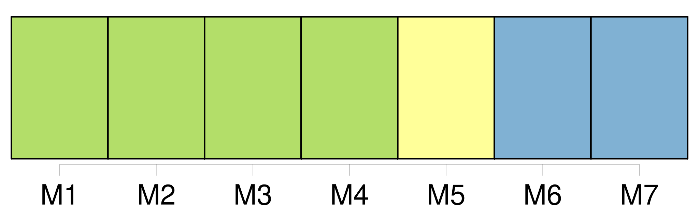

Longueur nb maillons : 11 mentions |
 |
[ article ] [52 phrases]
[ article ] [112 phrases]
[ article ] [46 phrases]
[ article ] [121 phrases]
A cette occasion, les cartes de voeux sont oblitérées avec un cachet postal spécial portant la mention « courrier transporté par montgolfière » [1 phrases]
[Cette année] , 3. 000 cartes de voeux ont été envoyées par les airs. [2 phrases]
[Cette année] , la montgolfière transportant les cartes a terminé sa course à Etueffont.
Pour « Ballooning Adventure », l'envol philatélique était aussi l'occasion de montrer ses nouveaux locaux, construits en 2002, et qui devraient voir, au cours de [l'année] [qui] s'ouvre, l'aménagement d'un atelier et d'un club-house. [43 phrases]
Le 31 décembre dans l'après-midi, un passage rue James-Long permettait de voir que la CAB avait tenu ses engagements : le dépotoir avait totalement disparu avant que ne sonnent les premières heures de [2003] |
|
Il est possible de télécharger la ressource sur la page Ortolang |
Si vous avez des questions ou vous voyez des erreurs, merci d'envoyer un mail à silvia.federzoni89@gmail.com |